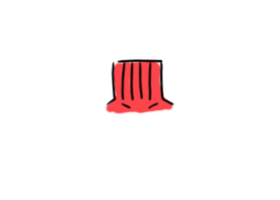
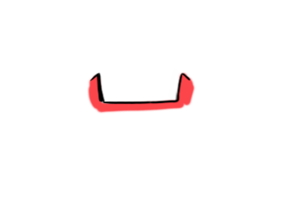
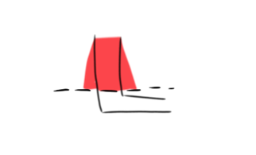
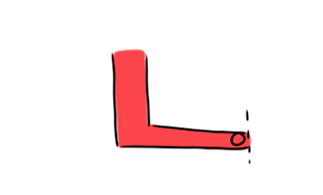
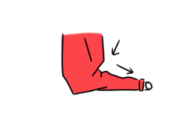
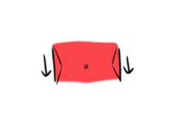
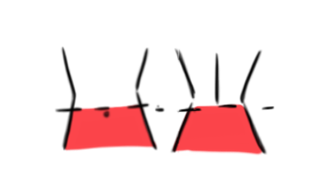
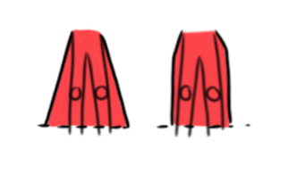
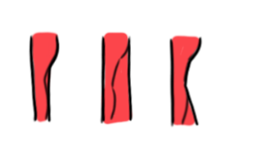

I have a long waistline and larger thighs. One of my biggest fears is sitting, bending, or squatting and my pants falling off.
Maybe worse: ripping. My struggle has always been finding pants and skirts that fit my waist and have a high enough waist.
Straight and fitted silhouettes are what I wear most because they can be easily found in stores.
I indulge a little in the loose and flared shapes when I'm relaxing or dressing things up for a fun outing.
Over the years, after wins, losses, and reflections where I am bluntly honest to myself,
I've narrowed down the common aspects shared by garments I wear with success.
Nowadays, when I shop, I check for...
The following is a list of them that I wear, these pieces can be intermingled to form one of the two silhouettes,
hence I have not separated them out. Instead, I grouped them by what goes on top/below, and this makes for
more outfits and reusability since they can be mixed with each other.
Starting at the Top
Crewnecks
Crewnecks that are fitted and stiff - these are my favorite.
They are so comfy and I can find them on all kinds of tops for all kinds of weather.
From knit sweaters, to blouses, to t-shirts and workout wear.
They are easy to find and I love how versatile they are for layering.

Turtlenecks
I also like to have a few turtlenecks that are less tight and good for the cold.
I only wear these in the cold, when they are on thick sweaters.
Clothing touching my neck can be extremely uncomfortable.
With a looser neckline, they usually don't bother me and I like the way I look and feel warm in them.

Square necklines
Square necklines that are small and fit snug add a lovely aura of feminity to my looks.
They are perfect for showing off necklaces.
I love square neckline dresses (and crewneck ones) that show a bit of my collarbone.
The way the sleeves are, they restrict on movement.
The neckline makes the fit more fickle; if it's too low it hangs when I bend down.
If it's too high, the shoulders don't fit right.
It's also quiet easy to show a strap so I have to make sure I have the right undergarments to wear with these.
They also make me cold, so I look for these in summer clothing and dresses.
Sleeves and Drape

Elbow-length sleeves or sleeves that fall at least 1/3 of the way down my forearm.
This length helps protect my skin from the sun.

Long sleeves that are fitted at the wrist ends or stiff at the ends.
I make sure the sleeves don't end just before my wrist; it makes the shirt look too small for me. I also make
sure they don't make my upper arm look squishy.

Dolman sleeves - these are nice when dressing down.
I like these on structured sweaters. They make it easier to layer and hide any weird
lumps from fabric wrinkles on the inner layer.
Fitted, defined waistlines
I gravitate towards these when I want to look put-together. They look more
slim-down and less bulky, and are less-prone to getting snagged on a hook.

Fitted, straight waistlines
I wear these when I want to hide any curves or when I'm in the mood for an oversized,
very casual look. This cut is also great for hot weather.
Tops that end at the hip - these are what I look best in.
They look great; not too short and not too long.
HOWEVER they ride up higher when I move around and get weirdly bunched up if my bottoms
weren't extremely high-waisted. So they don't work with every piece of clothing I own.
Bottoms

12 inch + rises on both the front and back.
Especially the back. Otherwise, when I bend over, my pants slip down and I get overly self conscious.
Pulling up or adjusting my pants in public is something I would rather avoid having to do.

Straight or A-line dresses/skirts
I wear ones that go past my knee, ideally end mid-way of my calf.
I always wear shorts underneath with them.
Of the two, I like the feel of an A-line dress better, but I go for
less-flared, straight ones for more formal settings.

Straight-legged pants - these are the most versatile.
I love structured formal pants that are straight, as in they go straight down and don't curve at the bottom.
A pair of fitted and a pair of flared bottoms can be great to mix things up.
The straight, fitted pants are the cuts I own most because they can be easily coordinated for most occasions.